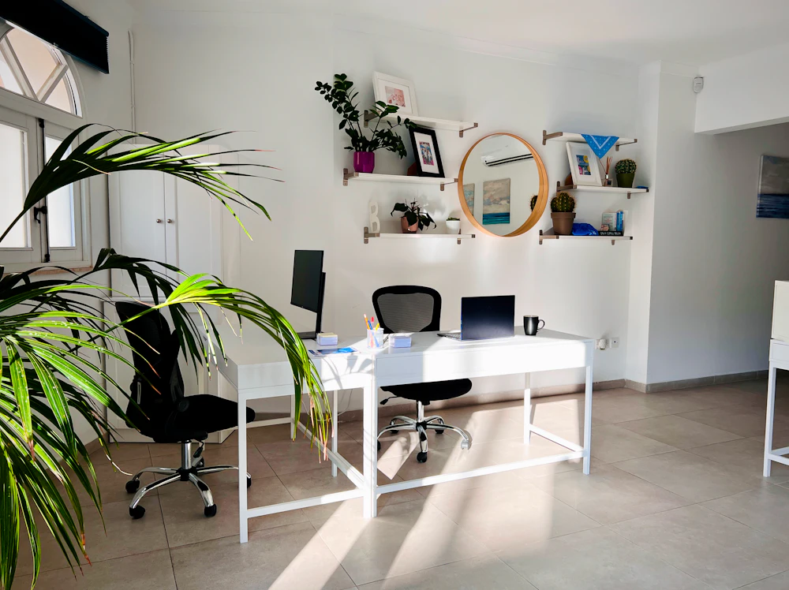

Nowy Sącz · ul. Zdrojowa 32 · od 2001 roku
Księgi prowadzone
przez ludzi,
których znasz z imienia
Dziewięcioosobowy zespół w dwóch działach — księgi handlowe i KPiR. Każda firma ma przypisaną osobę i jej bezpośredni adres e-mail. Bez infolinii, bez przerzucania sprawy dalej.
„Liczenie to nasza specjalnośćlicz z nami”
- 9osób w zespole
- 2działy księgowe
- 2001rok rozpoczęcia
- 15812/00świadectwo Min. Fin.
Zakres usług
Od pierwszego wpisu do bilansu
Obsługujemy firmę na każdym etapie — od rejestracji, przez bieżące księgi i kadry, po przekształcenie albo zamknięcie działalności.
-
01
Księgi handlowe i bilanse
Pełna rachunkowość spółek: ewidencja, rozrachunki, środki trwałe, sprawozdanie finansowe wraz z informacją dodatkową.
-
02
Podatkowa księga przychodów i rozchodów
KPiR i ryczałt dla jednoosobowych działalności i spółek osobowych, wraz z ewidencjami VAT i plikami JPK.
-
03
Pozostałe ewidencje podatkowe
Ewidencje przychodów, środków trwałych, wyposażenia i przebiegu pojazdu — prowadzone tak, by zgadzały się z księgą główną.
-
04
Obsługa kadrowo-płacowa
Umowy, listy płac, zasiłki, zgłoszenia do ZUS i PPK oraz pełna dokumentacja pracownicza.
-
05
Zakładanie, przekształcanie i likwidacja firm
Wybór formy działalności i opodatkowania, wnioski rejestrowe, przekształcenie jednoosobowej działalności w spółkę, zamknięcie firmy.
-
06
Dokumentacja do wniosków kredytowych
Zestawienia, zaświadczenia i sprawozdania w formie wymaganej przez bank lub instytucję finansującą — przygotowane na termin.
-
07
Doradztwo rachunkowe i księgowe
Bieżące konsultacje przy decyzjach, które mają skutek podatkowy — zanim dokument trafi do księgi.
O biurze
Jedno biuro, jeden adres, ten sam zespół
Biuro prowadzi mgr Bożena Ogorzałek, która posiada świadectwo kwalifikacyjne Ministra Finansów nr 15812/00, uprawniające do usługowego prowadzenia ksiąg rachunkowych. Działalność została zarejestrowana 2 stycznia 2001 roku i od tego czasu mieści się przy ul. Zdrojowej 32 w Nowym Sączu.
Praca jest podzielona na dwa działy — księgi handlowe i podatkową księgę przychodów i rozchodów — każdy z własnym kierownikiem. Dzięki temu firma trafia od razu do osoby, która zna jej rozliczenia, a nie do ogólnej skrzynki.

Dziewięć osób. Dwa działy. Komplet dokumentów na czas.
Zespół
Dwa działy, dziewięć osób, bezpośrednie adresy
Piszesz prosto do osoby, która prowadzi Twoje księgi. Poniżej pełny skład obu działów — tak jak odpowiadają za dokumenty na co dzień.
Księgi handlowe
- Ewa Adamek kierownik działu ewaa@ogorzalek.nsacz.net
- Urszula Gorzkowicz ulag@ogorzalek.nsacz.net
- Małgorzata Janisz gosiaj@ogorzalek.nsacz.net
- Dorota Jasińska dorotaj@ogorzalek.nsacz.net
- Danuta Kruczek danutak@ogorzalek.nsacz.net
Księga przychodów i rozchodów
- Agnieszka Cepiga kierownik działu agnieszkac@ogorzalek.nsacz.net
- Aneta Pajor anetap@ogorzalek.nsacz.net
- Dorota Jasińska dorotaj@ogorzalek.nsacz.net
- Małgorzata Janisz gosiaj@ogorzalek.nsacz.net
Właścicielka: mgr Bożena Ogorzałek — bozenao@ogorzalek.nsacz.net. Sprawy ogólne: biuro@ogorzalek.nsacz.net.
Pytania
To, o co pytają najczęściej
Prowadzicie pełną księgowość dla spółek?
Tak — to zadanie osobnego działu ksiąg handlowych, który liczy pięć osób i ma własnego kierownika. Prowadzimy ewidencję, rozrachunki, środki trwałe i sporządzamy sprawozdanie finansowe.
Dopiero zakładam firmę. Pomożecie wybrać formę opodatkowania?
Tak, i najlepiej porozmawiać zanim złożysz wniosek. Forma działalności i opodatkowania rzutuje na składkę zdrowotną, VAT i to, jaką ewidencję trzeba prowadzić — później zmiana bywa możliwa tylko w określonych terminach.
Z kim konkretnie będę się kontaktować?
Z osobą z działu właściwego dla Twojej formy rozliczeń — jej imię, nazwisko i adres e-mail znajdziesz w sekcji „Zespół". Kierownik działu zna sprawę na wypadek urlopu czy nieobecności.
Potrzebuję dokumentów do kredytu. Na kiedy je przygotujecie?
Zestawienia i zaświadczenia przygotowujemy na termin wskazany przez bank — wystarczy powiedzieć, jakiego formularza wymaga instytucja finansująca i do kiedy ma być gotowy.
Chcę przekształcić jednoosobową działalność w spółkę.
Prowadzimy takie przekształcenia, łącznie z likwidacją starej formy i otwarciem ksiąg nowego podmiotu. To proces rozpisany na kilka miesięcy, więc warto zacząć rozmowę odpowiednio wcześniej.
Co z bezpieczeństwem dokumentów?
Dokumentacja jest przechowywana w biurze przy ul. Zdrojowej 32, a dostęp do danych mają wyłącznie osoby prowadzące dane rozliczenia. Dbałość o bezpieczeństwo powierzonych danych jest zasadą biura od początku jego działania.
Kontakt
Zadzwoń albo napisz — odezwiemy się
Najszybciej telefonicznie: mamy cztery linie, więc rzadko kiedy jest zajęte. Jeśli wolisz pisemnie, formularz obok trafi na adres ogólny biura.
- Telefon / fax 18 444 30 65 18 444 30 66 18 441 83 61 18 441 03 74
-
Adres
ul. Zdrojowa 32
33-300 Nowy Sącz - Biuro biuro@ogorzalek.nsacz.net
- Właścicielka bozenao@ogorzalek.nsacz.net